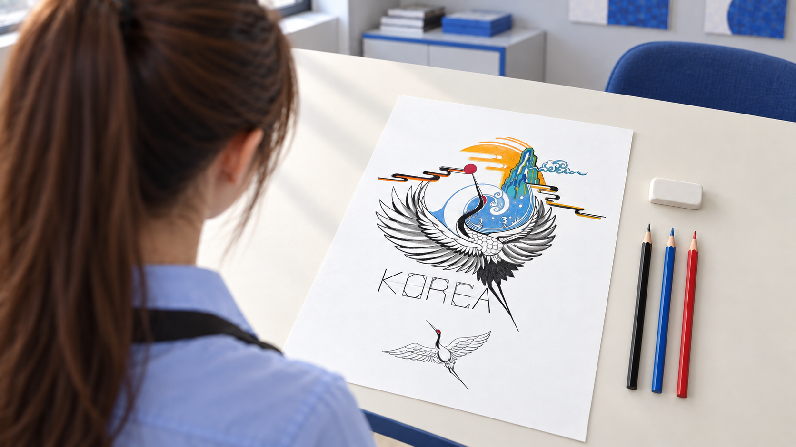

전체 화면 선택
V6 · 저비용 동작 검토본
Omni 1.1 Flash · 생성 360p / 4초 × 4개 · 총 16크레딧 · 편집 약 19.4초 · 무음
비용을 최소화한 동작·연결 검토본입니다.
손동작 약 46~57% 속도 · 약 0.7초 크로스 디졸브(두 장면이 겹치며 바뀌는 전환). 첫 얼굴과 마지막 작품은 원본 정지 이미지에 확대만 적용했습니다.
남은 한계: 생성 장면의 360p 질감과 연필 끝·선·색의 정밀한 일치는 아직 해결되지 않았습니다. 1920×1080 파일로 편집했지만 생성 장면이 원래부터 1080p인 것은 아닙니다. 작품도 기존 AI 재현 이미지라 원본 세부 선과 완전히 같지는 않습니다.
영상만 보기편집 MP4 다운로드이전 V5 검토본편집 정보 JSON실제 생성 프롬프트 JSON
기존 V1~V5는 그대로 보존했습니다. 각 홈페이지 시안에서 키보드 ←/→ 또는 모바일 좌우 스와이프로 같은 디자인 안의 영상 버전만 바뀝니다.
01 · 시선과 표정 유지
승인된 얼굴 정지 이미지에 1.2%의 미세한 확대만 적용. 새 표정이나 고개 움직임 없음.

02 · 앞치마 준비
한 번의 허리끈 당김을 선택하고 약 46% 속도로 재생. 매듭을 묶는 장면은 아님.

03 · 연필 첫 선
짧은 윤곽선 동작을 선택해 50% 속도로 재생. 연필 끝과 생성되는 선의 정확한 동기화는 미해결.

04 · 첫 파란색
파란색 영역 안의 작은 움직임을 선택해 약 57% 속도로 재생.

05 · 부분 채색
부분 채색 상태를 거쳐 완성작으로 연결. 약 57% 속도.

06 · 작품 감상과 직선 확대
원본 정지 이미지에서 같은 각도로 5.5초간 16% 확대. 머리 위로 올라가는 이동·회전 없음.
